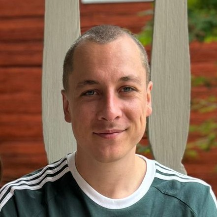

I am a machine learning researcher based in Copenhagen. I build algorithms for scientific machine learning, with a focus on fast and reliable uncertainty quantification. I've contributed to:
I write a bunch of code, mainly in Python/JAX (GitHub: @pnkraemer). For instance:
I am open to industry roles, starting Spring 2027 (Europe, ML research/engineering). CV available upon request. Contact info below.
I am currently a postdoc in Søren Hauberg's group at DTU. Before that, I did probabilistic numerics in Philipp Hennig's group in Tübingen, and before that, scattered data approximation with Christian Rieger in Bonn. I studied Mathematics and Business Mathematics in Bonn and Mannheim. I am a member of the ELLIS Society and an affiliated researcher at the Pioneer Centre for AI (P1).
If you need a three-sentence biography, e.g. for announcing a talk, [click here].
I go by "Nico", but use "Nicholas" when writing papers. Online, I tend to be @pnkraemer.
Talk to me in German (native), English, or Danish. I would love to hear from you!